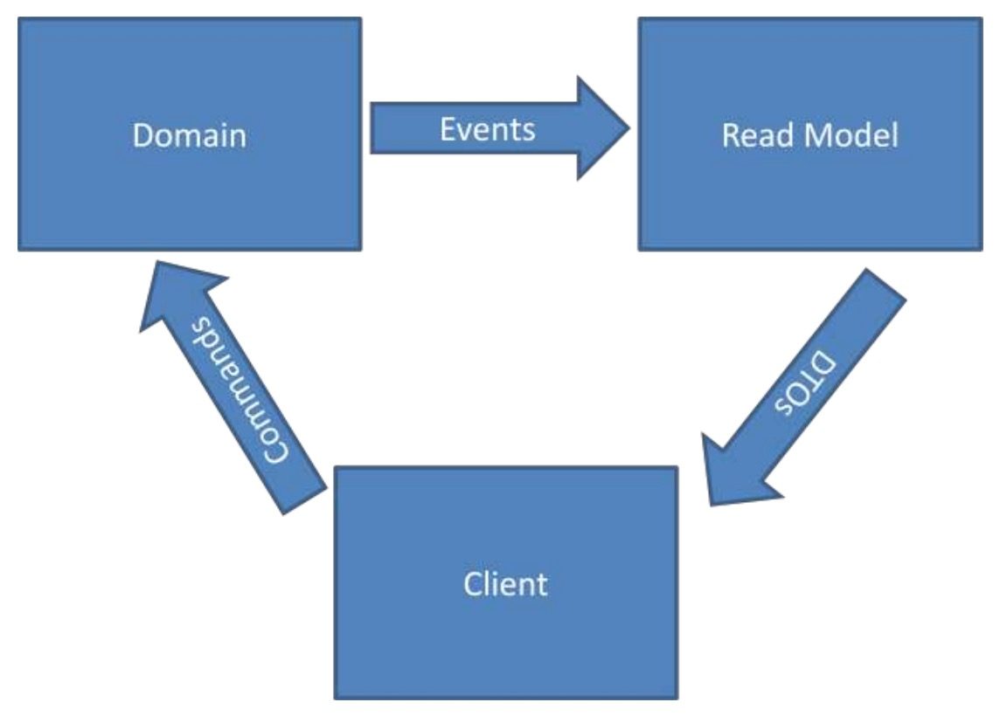

DDD, CQRS et ES
Aux frontières de l'over-engineering
DDD
(Domain-Driven Design)
La mission :
Résumer la complexité du produit à celle du domaine métier.
Construire un modèle du domaine.
Un langage omniprésent
- partagé avec le client
- dans les histoires utilisateur
- dans la doc
- dans le code (noms et verbes)
- privé de synonyme ou traduction
Le Graal de l'architecture :
Ou plus modestement :
Des points de frictions
- l'enfer des ORM
- intention de l'utilisateur diluée
- que faire du reporting, etc ?
- entités boulimiques
- entrepôts boulimiques
CQRS
(Command Query Responsibility Segregation)
Du CQS à grande échelle
Séparer le modèle d'écriture (command), du ou des modèles de lecture (query)
Exemple sur un service
interface UserWriteService {
create(user);
updateProfile(userId, profile);
grantRole(userId, role);
}
interface UserReadService {
getById(id);
findAll(criteria);
count();
}
Et sur un beau diagramme :
Eventual consistency
La partie lecture sera cohérente à terme.
Les points de frictions ?
- l'enfer des ORM
- intention de l'utilisateur diluée
- que faire du reporting, etc ?
- entités boulimiques
- entrepôts boulimiques
- Eventual consistency
- Pas de recherche côté commande
ES
(Event Sourcing)
Le bonheur ne se trouve pas au sommet de la montagne, mais dans la façon de la gravir
Exemple d'événement
{
"_id" : ObjectId("5808adaac540a7aa7a9ca160"),
"type" : "userSignedUp",
"date" : ISODate("2016-10-20T11:42:34.733+0000"),
"aggregate" : {
"id" : "fef594b6-83d7-4d26-9f20-96e7e99654b2",
"type" : "User"
},
"payload" : {
"email" : "michael.borde@arpinum.fr",
"password" : "$2a$10$eqSz6FuxhdjiZUYR"
}
}
Un flux d'événements
- 001. userSignedUp
- 002. userLoggedIn
- ...
- 297. userProfileUpdated ← snapshot
- 298. creditCardAddedToUser
- 299. userProfileUpdated
Le worlflow
Un entrepôt "event sourcé"
class EventSourcedRepository {
getById(id) {
return this._eventStore.eventsFromAggregate(id)
.then(events => apply(events));
}
function apply(events) {
// serious business
}
}
saveEvents(events) {
return this._eventStore.addAll(events);
}
}
La persistence du modèle d'écriture devient triviale
(snapshots compris)
A la découverte d'un domaine
... de comptabilité personnelle
Les événements
(puis les commandes)
- AccountAdded → AddAccount
- TransactionAddedToAccount → AddTransactionToAccount
- AccountBalanceUpdated
- BankAccountAdded → AddBankAccount
- BankAccountSynced → SyncBankAccount
- UserSignedUp → SignUserUp
Des agrégats se dessinent
- AccountAdded
- TransactionAddedToAccount
- AccountBalanceUpdated
- BankAccountAdded
- BankAccountSynced
- UserSignedUp
Quelques exceptions
- LoginFailed
- UserEmailAlreadyUsed
- SyncFailed
Les bounding contexts
- Finance
- Sync
- Authentication